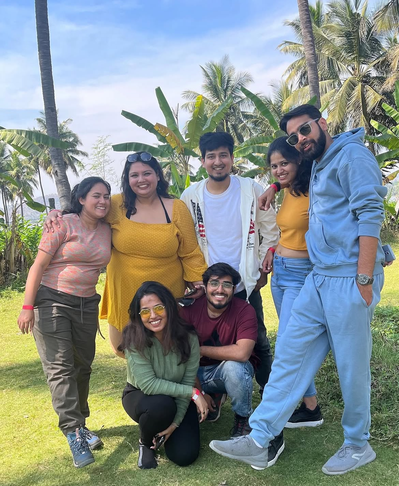
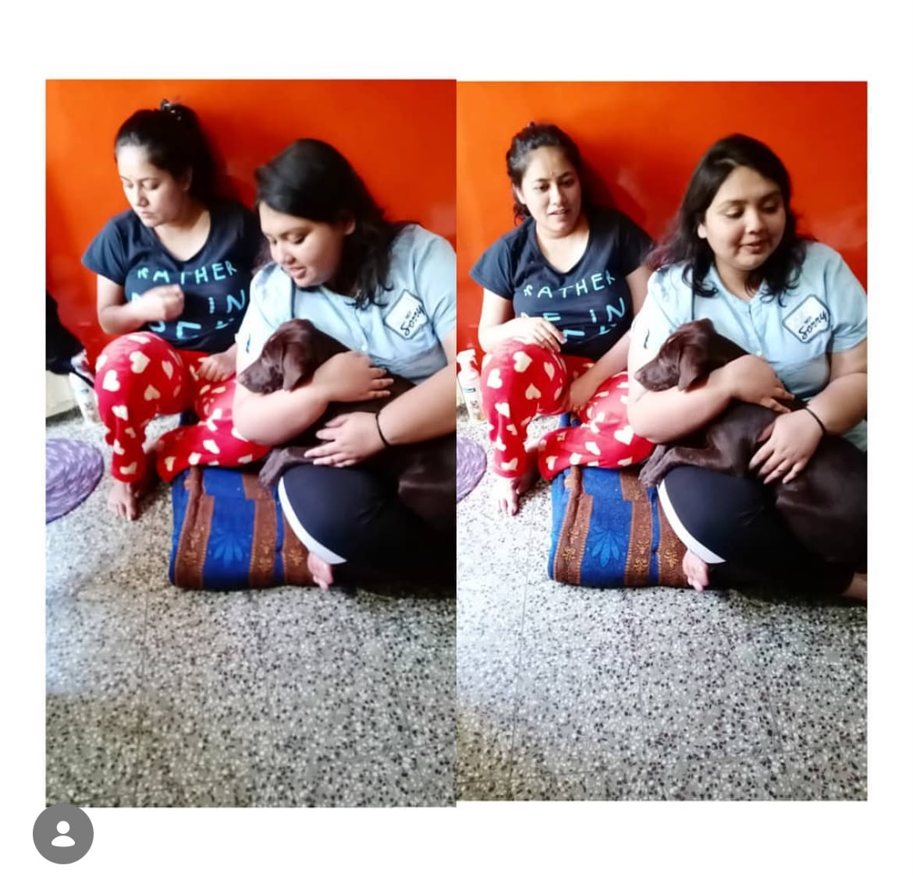
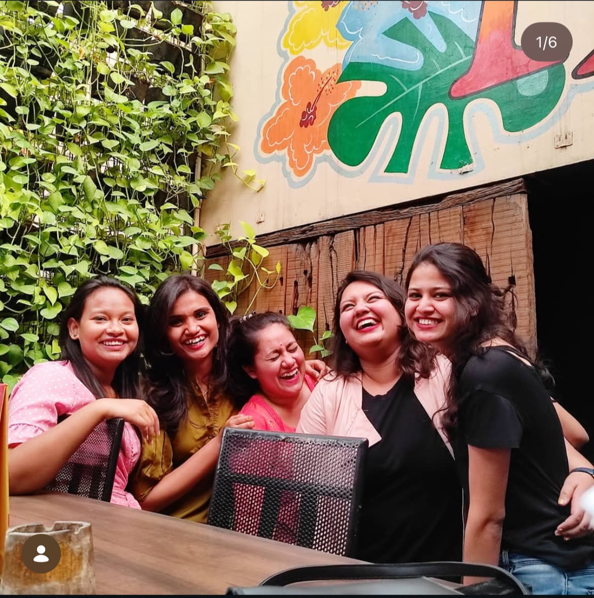
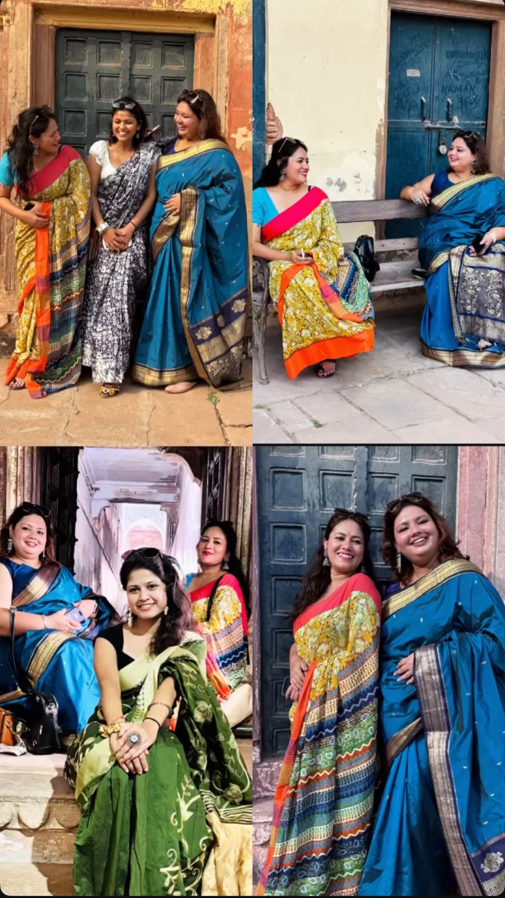

Our Journey 💜
Some stories aren't written. They're lived.
 It all started with a simple "Hi." 💜
It all started with a simple "Hi." 💜
Sometimes life introduces you to someone
without telling you
that they're about to change your life forever.

Just two colleagues... or so we thought. ☕
Somewhere between meetings, coffee breaks, and endless conversations... we found a friendship neither of us saw coming.
✨
"Hum Accenture aaye hi ek dusre se milne ke liye the."
✨
"Hum Accenture aaye hi ek dusre se milne ke liye the."
✨

The best memories were never planned. They simply happened because you were there. 💜
Without even realizing it... you became my safe place. 🤍
Home isn't always a place.
Sometimes...
it's a person.
 Thank you for making ordinary workdays
feel like some of my favourite memories.
Thank you for making ordinary workdays
feel like some of my favourite memories.
 From colleagues...
to best friends...
to sisters...
to family.
Forever. 💜
From colleagues...
to best friends...
to sisters...
to family.
Forever. 💜